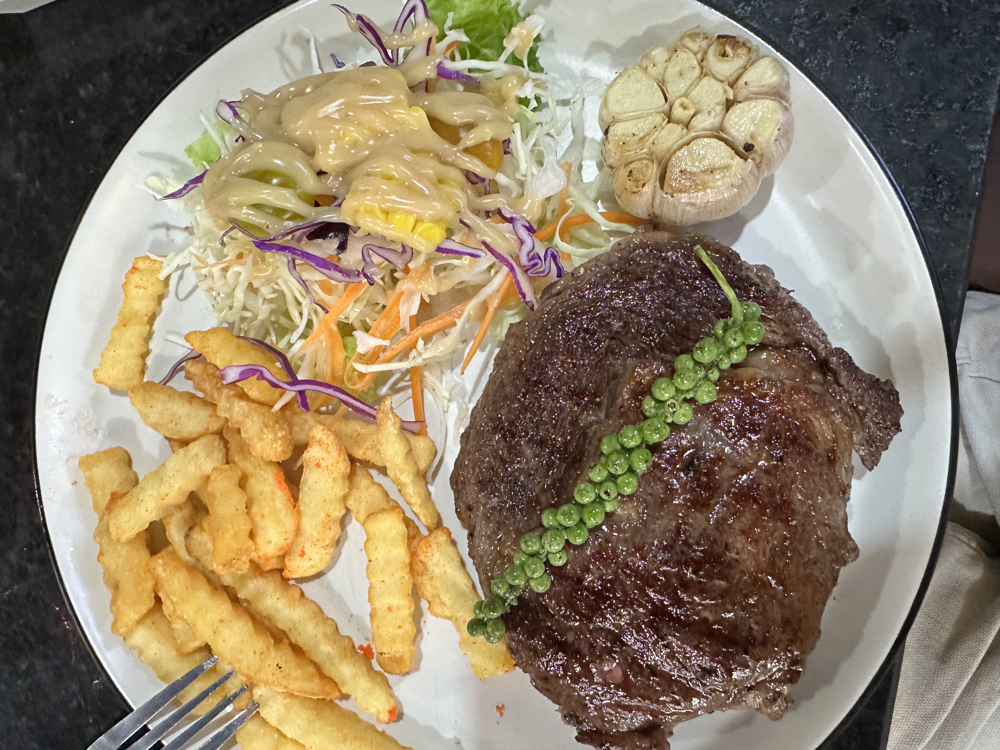

Professional Chef | Fine Dining & Luxury Cruise Experience
About Me
Professional Chef with over 10 years of experience in fine dining and luxury hospitality. Skilled in high-end culinary techniques, menu development, and delivering exceptional dining experiences in San Francisco and aboard luxury cruise liners.
Education & Culinary Training
Culinary Arts Program – Sala Baï Hotel & Restaurant School
Professional Culinary Certification
Food Safety & Hygiene Sanitation Certification
Work Experience
Fine Dining Chef — San Francisco, CA
Prepared and executed fine dining dishes maintaining the highest quality standards.
Managed kitchen line operations and presented sophisticated culinary plating.
Luxury Cruise Ship Chef — AmaMora Cruise Line
Delivered high-volume international gourmet cuisine in a fast-paced luxury environment.
Upheld strict international food safety, sanitation, and quality guidelines.
Signature Dish
Signature Pepper Steak — Meticulously prepared and plated to culinary perfection.

Featured Culinary Video
Get In Touch
For culinary inquiries or professional opportunities: